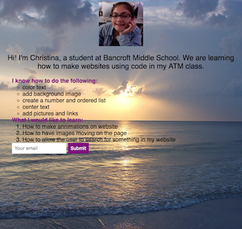

Christina's Website
-
Homepage
ATM
My Future
Soccer
I learned many things in 6th grade. Here are some of them:

These are the things I learned in 7th grade:
I have learned how to make a website using code. Here is a picture of a website that I made with the help of dash.
another thing i have learned is how to make a video and edit it
ATM has helped me and my family a lot(I help them when they need to know something about technology). I have learned many new and helpful things about technology and computers the past 3 years. It is a great program that it helps me in many ways. The knowledge I have from ATM sometimes helps me at home and with other classes when we are doing somthing on the internet or something that has technology involved in it.